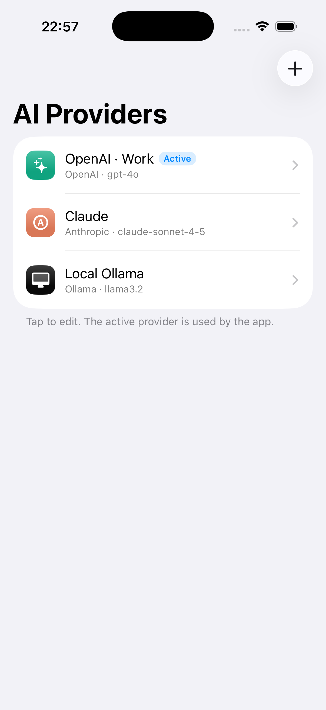
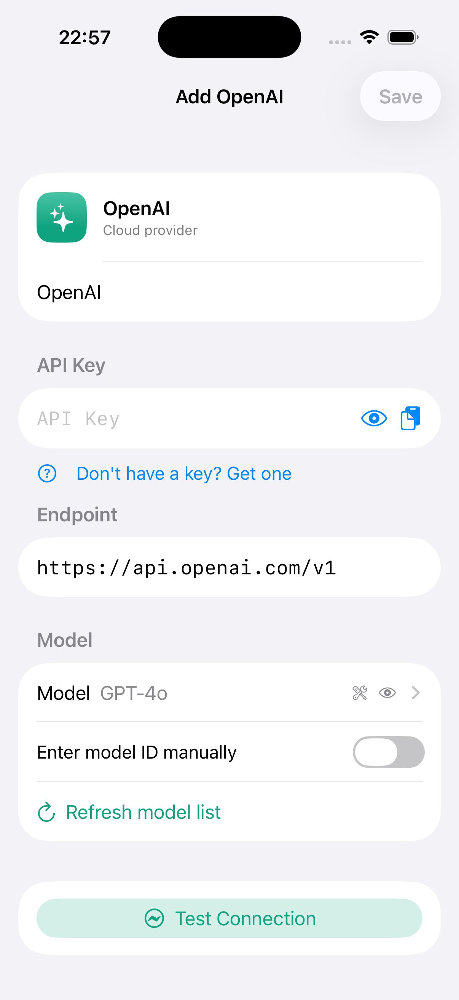
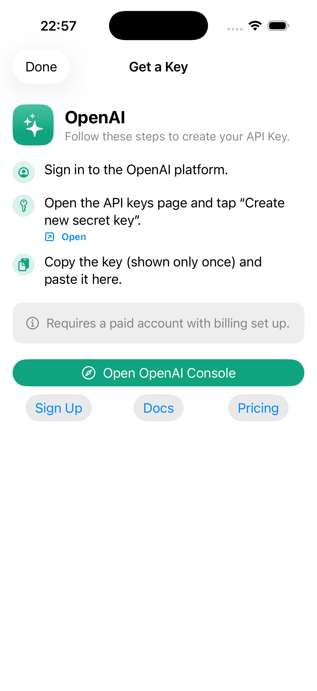
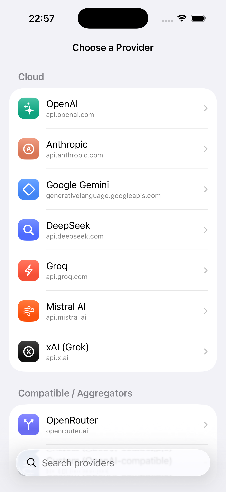

The BYOKit guide
Everything you need to add a production-grade Bring-Your-Own-Key LLM configuration experience to an iOS, iPadOS, or macOS app — from the one-line settings screen to streaming completions, custom providers, and on-device models.




Overview
BYOKit is a Swift Package that ships the part of a BYOK app everyone rebuilds by hand: the configuration UX. Calling an LLM is the easy bit; the work is the provider list, the "where do I get a key?" onboarding, key validation, one-tap connection testing, custom base URLs, Keychain storage, and multi-key management. BYOKit gives you all of it as polished, themeable SwiftUI, and keeps the model calls behind a swappable protocol so you can use any engine you like.
It is built in layers, so you take only what you need:
- Data-driven — the provider catalog lives in
providers.json; adding a provider is usually a JSON entry, no code. - Secure by default — keys go to the Keychain; the UI masks them; connection tests use a minimal request.
- Dependency-free core —
BYOKitCoreand the baseBYOKitlibrary pull in nothing third-party. Only the optional on-device adapter adds a dependency. - Swappable engine —
DefaultLLMClientspeaks OpenAI, Anthropic, Gemini, and Ollama overURLSession; conform toLLMClientto use anything else.
How it fits together
There are three objects you actually touch. Understanding their roles makes everything else click into place:
| Object | What it is | You use it to… |
|---|---|---|
ConfigurationStore | An ObservableObject that owns the list of
configurations, the active selection, and brokers secrets through the Keychain. |
Hold state. Create one, inject it, read activeConfiguration. |
BYOKSettingsView | The full settings center — list, add, edit, reorder, delete, choose the active provider, onboarding. | Render the entire BYOK screen in one line. |
LLMClient | The protocol that talks to a provider. DefaultLLMClient
is the built-in URLSession implementation. |
Validate, list models, complete, and stream. |
The flow of data is simple: the store persists what the user configured →
you combine the chosen configuration, its provider definition, and the secret into a
ResolvedConfiguration → you hand that to an LLMClient
to make a request.
Installation
Requirements: iOS 17 · iPadOS 17 · macOS 14, and the Swift 6.1 toolchain.
Xcode
File ▸ Add Package Dependencies… → paste the repository URL → choose Up to Next Major Version. Xcode fills in the latest release for you.
https://github.com/everettjf/BYOKitPackage.swift
dependencies: [
.package(url: "https://github.com/everettjf/BYOKit", from: "1.0.0")
]from: sets a floor, not a pin. SwiftPM always resolves the newest
compatible release, so this line stays correct for every future version — you never edit it on release day.Add the BYOKit product (the umbrella that re-exports every layer). If you only
need the data layer, depend on BYOKitCore; for just the UI, BYOKitUI.
import BYOKit // re-exports Core · Store · Client · UIQuick start
Two steps to a working BYOK screen: create a store, then render the settings view with a client.
import SwiftUI
import BYOKit
@main
struct MyApp: App {
// Keychain-backed secrets + UserDefaults-backed configuration list.
@StateObject private var store = ConfigurationStore()
var body: some Scene {
WindowGroup {
BYOKSettingsView()
.environmentObject(store) // required
.byokClient(DefaultLLMClient()) // or your own LLMClient
}
}
}The complete flow
Here is the end-to-end path from a fresh app to a streamed answer, step by step.
Create & inject the store
One ConfigurationStore for the app, injected as an environment object.
It loads any previously saved configurations on init.
@StateObject private var store = ConfigurationStore()Let the user configure a provider
Present BYOKSettingsView(). The user picks a provider, follows the
onboarding to get a key, pastes it, and taps Test Connection. BYOKit persists
the configuration and saves the key to the Keychain.
Resolve the active configuration
When you want to make a request, build a ResolvedConfiguration from the
active config, its provider definition, and the stored key.
func resolveActive() async -> ResolvedConfiguration? {
guard let config = store.activeConfiguration,
let provider = await ProviderRegistry.shared.provider(config.providerID)
else { return nil }
return ResolvedConfiguration(
provider: provider,
configuration: config,
apiKey: store.apiKey(for: config.id)
)
}Send a request
Hand the resolved configuration to any LLMClient.
guard let resolved = await resolveActive() else { return }
let client = DefaultLLMClient()
let reply = try await client.complete(.text("Write a haiku about Swift"), with: resolved)
print(reply.text)Or stream it
Swap complete for streamComplete to render tokens as they arrive.
for try await delta in client.streamComplete(.text("Write a haiku"), with: resolved) {
text += delta // each value is a delta — append for the running text
}Providers & the registry
A Provider is a value type describing one service: its display name, brand
appearance, API format, default base URL, credential rules, onboarding guide, and model
presets. The full catalog is served by ProviderRegistry, an actor with a
shared instance loaded from the bundled providers.json.
let registry = ProviderRegistry.shared
let all = await registry.all() // every provider, in display order
let openAI = await registry.provider(.openAI) // look up by id
let cloud = await registry.providers(.kinds(.cloud)) // filter by kind
let subset = await registry.providers(.only(.openAI, .anthropic))Built-in ids have convenience shortcuts (.openAI, .anthropic,
.gemini, .ollama); any other id is just a string literal, e.g.
"deepseek".
ConfigurationStore
The app-facing source of truth. It is @MainActor and an
ObservableObject, so SwiftUI views update automatically. It owns the
configurations, the active selection, and a CredentialStore for secrets.
Reading state
store.configurations // [LLMConfiguration] — the saved list
store.activeConfiguration // the currently selected one, or nil
store.activeConfigurationID // the active UUID (settable; persisted)
store.apiKey(for: id) // the Keychain-stored key for a configMutating state
Adding programmatically (most apps just let BYOKSettingsView do this):
let config = LLMConfiguration(
providerID: .openAI,
displayName: "My OpenAI",
selectedModelID: "gpt-4o-mini"
)
try store.add(config, apiKey: "sk-…") // key → Keychain; becomes active if it's the first
store.update(config) // non-secret fields
try store.setAPIKey("sk-new", for: config.id)
store.remove(config.id) // also deletes its secretsCredentialStore and a ConfigurationPersistence.
The defaults are KeychainCredentialStore and UserDefaultsConfigurationPersistence;
pass InMemoryCredentialStore() in tests or previews.ResolvedConfiguration
The bundle of everything needed to talk to an endpoint: a Provider, the user's
LLMConfiguration, and the resolved secret(s). It computes the effective base URL
(config override → provider default) and model id (selected → first preset) for you.
let resolved = ResolvedConfiguration(
provider: provider,
configuration: config,
apiKey: store.apiKey(for: config.id)
)
resolved.baseURL // effective endpoint
resolved.modelID // effective modelLLMClient
The abstraction over "talking to a provider". DefaultLLMClient is the built-in
implementation — zero dependencies, URLSession only — and understands the
OpenAI, Anthropic, Gemini, and Ollama wire formats (including their streaming protocols).
public protocol LLMClient: Sendable {
func validate(_ resolved: ResolvedConfiguration) async throws -> ValidationResult
func listModels(_ resolved: ResolvedConfiguration) async throws -> [ModelInfo]
func complete(_ request: CompletionRequest, with resolved: ResolvedConfiguration) async throws -> CompletionResponse
func streamComplete(_ request: CompletionRequest, with resolved: ResolvedConfiguration) -> AsyncThrowingStream<String, Error>
}streamComplete has a default implementation that falls back to a single
complete call, so a custom client only needs to implement true streaming if it can.
Sending a completion
A CompletionRequest is a list of ChatMessages plus optional model,
token, and temperature overrides. For a one-shot prompt, .text(_:) is the shortcut.
// Shortcut: a single user message
let reply = try await client.complete(.text("Summarize this"), with: resolved)
// Full control: system + history + parameters
let request = CompletionRequest(
messages: [
.system("You are a terse assistant."),
.user("Explain actors in one sentence.")
],
model: "gpt-4o", // overrides the configuration's model
maxTokens: 256,
temperature: 0.3
)
let response = try await client.complete(request, with: resolved)
print(response.text, response.modelID ?? "")Errors are typed as LLMClientError (.missingAPIKey,
.http(status:body:), .transport, …) and are localized.
Streaming
Every LLMClient can stream. DefaultLLMClient parses the provider's
native stream — OpenAI / Anthropic / Gemini Server-Sent Events, Ollama NDJSON — and yields
each text delta. Concatenate the deltas to build the full response.
@MainActor @Observable
final class ChatViewModel {
var output = ""
func ask(_ prompt: String, _ resolved: ResolvedConfiguration) async {
output = ""
let client = DefaultLLMClient()
do {
for try await delta in client.streamComplete(.text(prompt), with: resolved) {
output += delta
}
} catch {
output = "Failed: \(error.localizedDescription)"
}
}
}LLMClient doesn't
override streamComplete, the default runs complete and yields the whole
text as one chunk — your UI code stays the same.Connection testing & validation
There are two layers of checking. Local key validation is instant and offline —
a KeyValidation on the provider checks prefix, length, and regex before any network
call. Connection testing actually probes the endpoint via
client.validate(_:), returning latency and (when supported) the live model list.
let result = try await client.validate(resolved)
if result.ok {
print("OK in \(result.latency ?? 0)s")
print(result.detectedModels?.count ?? 0, "models")
}In the UI this is the Test Connection button. You can drop the same affordance
anywhere with ConnectionTestButton (see reusable components).
Model selection
Each provider ships presets (curated ModelInfo values with display
names, context windows, and capability tags). Providers that support it can also list models
dynamically from the live API.
provider.models.presets // [ModelInfo] — always available
provider.models.supportsDynamicListing
if provider.models.supportsDynamicListing {
let live = try await client.listModels(resolved)
}The bundled ModelPickerView already merges presets with the live list when available.
Theming
Match the host app with a single modifier. BYOKTheme takes an accent color and a
corner radius; per-provider brand colors are preserved where it matters.
BYOKSettingsView()
.environmentObject(store)
.byokTheme(BYOKTheme(accent: .pink, cornerRadius: 16))Limiting which providers appear
Two modifiers, depending on whether you want to filter the built-in catalog or supply your own list entirely.
// Filter the built-in catalog
.byokProviders(.only(.openAI, .anthropic, .ollama))
.byokProviders(.kinds(.cloud))
// Or provide an explicit list (e.g. built-ins + your own)
let builtins = await ProviderRegistry.shared.all()
.byokProviders(builtins + [myCustomProvider])
// Hide the "where do I get a key?" onboarding affordances
.byokShowsOnboarding(false)Reusable components
Don't want the whole settings center? Every building block is public and usable on its own:
| Component | Use |
|---|---|
ProviderPickerView | The branded grid/list of providers. |
ProviderConfigForm | The add/edit form for one configuration. |
OnboardingGuideView | The "get a key" steps, notes, and deep links for a provider. |
ConnectionTestButton | A self-contained test button with spinner + result state. |
KeyField | A masked key field with inline validation hints. |
ProviderBadge | The provider's brand icon/monogram at any size. |
ModelPickerView | Preset + live model picker. |
Localization
UI chrome, key-validation hints, and connection/error messages ship in English and Simplified Chinese (zh-Hans), resolved from the package's own bundle. The host app's language selection decides which is shown — there's nothing to set up. To preview Chinese in the simulator, set the scheme's App Language to Chinese, Simplified.
On-device models
The optional BYOKitClientAnyLanguageModel product adds on-device inference via
AnyLanguageModel. It wraps a
fallback client, so every cloud/HTTP provider keeps working through DefaultLLMClient
while local providers are handled on-device.
Apple Foundation Models
import BYOKitClientAnyLanguageModel
let builtins = await ProviderRegistry.shared.all()
BYOKSettingsView()
.environmentObject(store)
.byokClient(AnyLanguageModelClient()) // adds on-device support
.byokProviders(builtins + [.appleFoundationModels]) // expose the Apple providerBYOKit library
remains dependency-free.MLX & llama.cpp (opt-in traits)
The adapter also serves on-device MLX (Apple Silicon) and llama.cpp / GGUF models, gated behind package traits so the heavy backends are only pulled in when you ask for them.
.package(url: "https://github.com/everettjf/BYOKit", from: "1.0.0",
traits: ["MLX", "Llama"]) // enable the backends you wantBYOKSettingsView()
.byokClient(AnyLanguageModelClient())
.byokProviders(builtins + [.appleFoundationModels, .mlx, .llama]).mlx— the selected model id is a Hugging Face MLX repo (e.g.mlx-community/Qwen3-0.6B-4bit), downloaded on first use..llama— point themodelPathfield at a local.gguffile.
With neither trait enabled (the default), these providers report that the backend isn't compiled in, and nothing heavy is added to your dependency graph.
Adding a provider
Because the catalog is data-driven, adding a provider is usually just an entry in
Sources/BYOKitCore/Resources/providers.json — no UI code. Any OpenAI-compatible
endpoint works out of the box with "apiFormat": "openai".
{
"id": "together",
"displayName": "Together AI",
"kind": "cloud",
"apiFormat": "openai",
"appearance": { "monogram": "TG", "tintHex": "#0F6FFF" },
"defaultBaseURL": "https://api.together.xyz/v1",
"allowsCustomBaseURL": true,
"credential": {
"requiresAPIKey": true,
"keyDisplayName": "API Key",
"validation": { "minLength": 20 }
},
"onboarding": {
"consoleURL": "https://api.together.xyz/settings/api-keys",
"steps": [
{ "id": 1, "text": "Sign in and open the API keys page." }
]
},
"models": {
"supportsDynamicListing": true,
"presets": [
{ "id": "meta-llama/Llama-3.3-70B-Instruct-Turbo", "displayName": "Llama 3.3 70B" }
]
}
}Prefer not to fork? Build a Provider in Swift and pass it through
.byokProviders(builtins + [myProvider]), or host a remote catalog (next section).
Custom LLMClient
To route requests through your own engine — a proxy, an SDK, a mock — conform to
LLMClient and inject it with .byokClient(_:). You get streaming for
free via the protocol's default; override streamComplete only if your engine
streams natively.
struct MyClient: LLMClient {
func validate(_ r: ResolvedConfiguration) async throws -> ValidationResult {
.init(ok: true, latency: 0.1)
}
func listModels(_ r: ResolvedConfiguration) async throws -> [ModelInfo] { [] }
func complete(_ req: CompletionRequest, with r: ResolvedConfiguration) async throws -> CompletionResponse {
// call your backend with req.messages, r.modelID, r.apiKey …
.init(text: "…")
}
// streamComplete inherited — falls back to complete()
}Remote catalog (OTA)
The registry can be refreshed from a remote JSON without an app update — useful for adding
providers or models between releases. The update is only applied if its version
is newer than the built-in bundle; on any failure the built-in catalog is kept.
let url = URL(string: "https://example.com/byokit/providers.json")!
let newVersion = try await ProviderRegistry.shared.loadRemote(from: url)Architecture
Layered, so you depend on only what you use. BYOKitCore has zero third-party
dependencies, and nothing pulls in a heavy SDK unless you opt in.
| Target | Role | Depends on |
|---|---|---|
BYOKitCore | Models, provider registry, onboarding metadata, providers.json | — |
BYOKitStore | Keychain credential store + configuration persistence | Core |
BYOKitClient | LLMClient protocol + DefaultLLMClient (URLSession) | Core |
BYOKitUI | SwiftUI components | Core · Store · Client |
BYOKit | Umbrella re-export | all |
BYOKitClientAnyLanguageModel | Optional on-device adapter (Apple FM + MLX / llama.cpp via traits) | Core · Client · AnyLanguageModel |
Testing
Run the suite with swift test. It covers the registry, key validation, Keychain
round-trips, the store, all four API formats (via a stubbed URLProtocol),
streaming, and the AnyLanguageModel adapter's delegation. Set
ROCKY_OPENAI_APIKEY to also run the live OpenAI smoke tests (skipped otherwise).
For previews and unit tests, construct a store with in-memory storage:
let store = ConfigurationStore(credentials: InMemoryCredentialStore())FAQ
Where are API keys stored?
In the system Keychain via KeychainCredentialStore. The UI never shows them in
plain text, and removing a configuration deletes its secrets.
Do I have to use DefaultLLMClient?
No. It's the convenient default, but any LLMClient conformer works — see
Custom LLMClient.
Can I support a provider that isn't built in?
Yes — add a providers.json entry, build a Provider in Swift, or
host a remote catalog. Any OpenAI-compatible API works with no code.
Does the base library pull in heavy dependencies?
No. BYOKitCore and the umbrella BYOKit are dependency-free. Only the
optional on-device adapter adds one, and its MLX/llama.cpp backends are behind opt-in traits.
How do I run the demo app?
cd Example
xcodegen generate # brew install xcodegen
open BYOKitDemo.xcodeproj